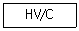
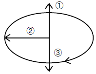
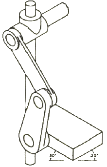
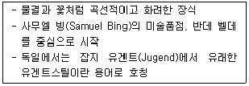
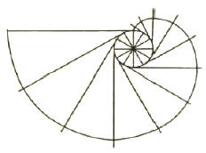

시각디자인산업기사 (2010-03-07 기출문제)
1과목: 색채학
1. 현색계에 대한 설명 중 틀린 것은?
- 색채(물체색)를 표시하는 표색계이다.
- 일반적인 색 지각의 심리적인 속성에 따른다.
- 물체의 색채를 표시하는 체계이다.
- 측색계를 필요로 한다.
(정답률: 85%)

2. 디지털색채시스템에서 CMYK형식에 대한 설명으로 옳은 것은?
- CMY에 K를 별도로 추가하여 검정을 나타낸다.
- 가법혼색 원리를 사용한다.
- RGB형식에서 CMYK 형식으로 변환되었을 경우 컬러가 더욱 선명해 보인다.
- 표현할 수 있는 컬러의 범위가 RGB형식보다 넓다.
(정답률: 알수없음)
3. 동일한 주파장의 색광도 강도를 변화시키면 색상이 다르게 보이며 다른 유사한 색광도 강도에 따라서 동일하게 보일 수 있는 현상은?
- 색음현상
- 베졸트-브뤼케 현상
- 베버-페히너 이론
- 헬슨-저드효과
(정답률: 60%)
4. 다음 보기는 먼셀 색체계의 색표기법이다. 옳은 순서는?

- 명도, 채도, 색상
- 색상, 채도, 명도
- 채도, 색상, 명도
- 색상, 명도, 채도
(정답률: 91%)
5. 색에 대한 일반적인 내용 중 맞는 것은?
- 빨강은 파랑보다 작아 보인다.
- 검정은 흰색보다 돌출되어 보인다.
- 파랑은 노랑보다 커 보인다.
- 녹색은 빨강보다 안정감 있게 느껴진다.
(정답률: 100%)
6. 무수히 많은 색 차이와 색혼합, 색교정을 정확하게 수행하기 이해서는 어떤 시세포가 작용할 수 있는 시각상태이어야 하는가?
- 추상체
- 간상체
- 잘난체
- 수정체
(정답률: 50%)
7. ISCC-NIST 색명법 색상 수식어에서 색상, 채도, 명도의 가장 선명한 톤을 지칭하는 수식어는?
- pale
- brilliant
- vivid
- strong
(정답률: 93%)
8. 명시도와 주목성에 대한 내용 중 틀린 것은?
- 색의 3속성 중에서 특히 색상의 차이를 크게 하면 명시도가 높다.
- 명시도가 높은 색은 어느 정도 주목성도 높다.
- 유채색끼리일 때에는 노랑과 파랑, 주황과 보라의 관계일 때 명시도가 높다.
- 명시도를 결정하는 요인은 조명조건, 대상색과 배경색의 크기이다.
(정답률: 19%)
9. 다음 중 우울, 무기력을 연상시키는 색은?
- 흰색
- 회색
- 청색
- 자주색
(정답률: 85%)
10. 사람이 색을 지각하는 과정에 대한 학설이 아닌 것은?
- 삼원색설
- 반대색설
- 배색설
- 단계설
(정답률: 37%)
11. 바탕색에 따라서 어떤 색이 맑게 혹은 탁하게 느껴지는 것과 관련이 있는 것은?
- 색상대비
- 명도대비
- 채도대비
- 보색대비
(정답률: 70%)
12. 색채계획에서 배색기법을 나타낸 것으로 틀린 것은?
- 기조색은 면적이 차지하는 비율이 크므로 패션, 인테리어, 텍스타일에서 싫증이 나지 않는 색을 선정해야 한다.
- 보조색은 이미 정해진 기조색에 나중에 조합하는 색으로 인테리어에서 가구나 소품의 색으로 활용한다.
- 그라데이션에 조화는 모든 단계의 색을 동일하게 처리하는 배색기법을 말한다.
- 다색의 배색을 할 때는 톤을 통일하여 제시하면 조화를 이루는 배색을 쉽게 찾을 수 있다.
(정답률: 92%)
13. 다음 중 노랑이 되는 RGB 코드는?
- (255,0,255)
- (255,255,255)
- (0,255,255)
- (255,255,0)
(정답률: 90%)
14. 다음 중 MAGENTA의 보색은?
- YELLOW
- GREEN
- CYAN
- BLUE
(정답률: 67%)
15. 다음은 색입체 구성의 개념도이다. 옳은 것은?

- ①-채도, ②-명도, ③-색상
- ①-명도, ②-색상, ③-채도
- ①-명도, ②-채도, ③-색상
- ①-채도, ②-색상, ③-명도
(정답률: 91%)
16. 다음 중 푸르킨예 현상은?
- 어떤 조명 아래에서 물체색을 오랫동안 보면 그 색의 감각이 약해지는 현상
- 수면에 뜬 기름이나, 전복껍질에서 나타나는 색의 간섭현상
- 해가 진 야간시에는 단파장의 색이 잘 보이는 현상
- 황색, 적색, 녹색 등 유채색을 느끼는 세포의 지각 현상
(정답률: 74%)
17. 먼셀의 색상기호 5R과 5BG의 조화는?
- 동등조화
- 유사조화
- 보색조화
- 명도조화
(정답률: 66%)
18. 감법혼색의 원리가 사용되는 경우가 아닌 것은?
- 컬러복사
- 컬러인쇄
- 컬러 텔레비젼
- 수채화
(정답률: 59%)
19. 비렌의 색채 조화론의 기본이 아닌 것은?
- 탁색(dull)
- 암색조(shade)
- 톤(tone)
- 명색조(tint)
(정답률: 67%)
20. 저드(D.B.Judd)의 색채조화 원리를 바르게 나열한 것은?
- 질서성, 다양성, 균형성, 친근성
- 질서성, 친근성, 유사성, 명료성
- 친근성, 전통성, 명료성, 수원성
- 조화성, 친근성, 개성, 공통성
(정답률: 77%)
2과목: 인쇄 및 사진기법
21. 다음 중 평판 판식에 속하는 것은?
- 목판
- 스크린판
- 망점 그라비어판
- ps판
(정답률: 82%)
22. 스튜디오 조명으로 부드러운 조명을 얻고자 할 때의 방법 중 가장 바람직하지 못한 것은?
- 소프트 박스를 사용한다.
- 트레싱지를 조명 앞에 씌워 사용한다.
- 반사판을 이용하여 간접조명을 한다.
- 조명의 광량을 낮춘다.
(정답률: 알수없음)
23. 속장을 실로 매거나 철사로 맨 다음 겉장만 양장 형식에 따라 제책한 방식은?
- 무선철 제책
- 반양장 제책
- 반중철 제책
- 재래식 제책
(정답률: 50%)
24. 개성있는 분위기를 묘사하며, 볼륨감과 입체감을 강조하기 위해 인물사진 촬영에 이용되는 가장 대표적인 광선은?
- 렘브란트 라이트
- 버터플라이 라이트
- 스플릿 라이트
- 라인 라이트
(정답률: 67%)
25. 컬러사진에서 강한 청색광이 청감유제층에 흡수되고 난 후 나머지 청색광이 아래 유제층에 영향을 주지 못하도록 하는 역할을 하는 층은?
- 중간층
- 황색필터층
- 보호층
- 적감유제층
(정답률: 55%)
26. 광화학적 방법으로 제판하는 방식이 아닌 것은?
- 선화판
- 연판
- 망점판
- 콜로타이프
(정답률: 70%)
27. 화상을 이루고 있는 할로겐화은 결정 입자가 필름 유제막 내에 어는 정도 가늘고 고르게 분포되어 있는지를 시각적으로 말할 때 무엇이라고 하는가?
- 콘트라스트
- 관용도
- 입상성
- 감색성
(정답률: 64%)
28. 컬러 네거티브 필름에서 맨 윗층에 발색층에 해당되는 것은?
- green
- magenta
- cyan
- yellow
(정답률: 50%)
29. 다음 중 색온도가 가장 높은 조건인 것은?
- 태양이 남중했을 때
- 오후 3시경일 때
- 해뜨기 전 새벽녘일 때
- 오전 10시경일 때
(정답률: 42%)
30. 다음 중 가장 넓은 범위(화각)를 촬영할 수 있는 렌즈는?
- 마이크로 렌즈
- 표준 렌즈
- 광각 렌즈
- 망원 렌즈
(정답률: 67%)
31. 물과 기름의 반발력을 이용하여 인쇄하는 방식은?
- 볼록판 인쇄
- 평판 인쇄
- 오목판 인쇄
- 공판 인쇄
(정답률: 59%)
32. 뒤비침(print through) 현상에 대한 설명으로 틀린 것은?
- 기름성분이 많은 잉크를 사용하면 발생한다.
- 종이의 불투명도가 높을수록 발생하기 쉽다.
- 종이의 두께가 두꺼울수록 발생량이 적다.
- 고점도 잉크를 사용하면 발생량이 적어진다.
(정답률: 67%)
33. 거리계 연동식 카메라(Range finder camera)의 장점이 아닌 것은?
- 가볍고 휴대하기 편리하다.
- 정확한 초점을 맞출 수 있으며 선예한 화상을 얻을 수 있다.
- 시차가 생기지 않는다.
- 촬영시 셔텨의 진동이 적고 플래시 촬영시 셔터 속도에 제한을 받지 않는다.
(정답률: 67%)
34. 잉크가 인쇄판을 통과하여 인쇄되는 대표적인 공판 인쇄 방식은?
- 볼록판인쇄
- 평판인쇄
- 오목판인쇄
- 스크린인쇄
(정답률: 67%)
35. 클로즈업 촬영을 할 때 벨로우즈의 길이가 2배로 늘어나는 노출량은 어떻게 해야 하는가?
- 1/2로 줄인다.
- 2배로 늘인다.
- 4배로 늘인다.
- 8배로 늘인다.
(정답률: 알수없음)
36. 색온도에 대하여 옳게 설명한 것은?
- 빛의 어둡고 밝은 정도를 말한다.
- 빛이 가지고 있는 파장의 성분 비율을 말한다.
- 태양이 남중하였을 때 색온도는 3400K이다.
- 단위는 섭씨온도로 나타내어야 하며, 절대온도 -273도씨를 말한다.
(정답률: 63%)
37. 펄프(Pulp)의 원료가 되는 식물 섬유의 화학적 조성으로만 나열된 것은?
- 폴리올레핀, 클로로포름, 폴리에틸렌
- 크라프트, 폴리올레핀, 폴리에스테르
- 셀룰로오스, 헤미셀룰로오스, 리그닌
- 폴리에스테르, 헤미셀룰로오스, 리그닌
(정답률: 54%)
38. 정착액에 칼륨명반을 첨가하는 주된 이유는?
- 수세를 촉진시키기 위하여
- 유제를 경막시키기 위하여
- 수세액을 중화시키기 위하여
- 현상 주약으로서 할로겐화은을 용해시키기 위하여
(정답률: 17%)
39. 보통 흑백 필름의 인화용으로 사용되고 있는 가스라이트 인화지의 현상온도로 가장 적당한 것은?
- 13도~15도
- 18도~20도
- 23도~25도
- 27도~30도
(정답률: 63%)
40. 다음 중 외부 포장용지에 가장 많이 사용되는 것은?
- 인디아지
- 크라프트지
- 킬레이트지
- 버라이트지
(정답률: 88%)
3과목: 시각디자인론
41. 기업이 소비자와 사회에 대해 일괄된 이미지를 만들기 위한 종합적 표현 정책은?
- Symbol Mark
- Charactor
- Publicity
- Design Policy
(정답률: 59%)
42. 도면의 척도 중 실척, 축척, 배척의 표기 순서로 나열된 것은?
- 1:1, 1:100, 50:1
- 1:100, 50:1, 1:1
- 50:1, 1:1, 1:100
- 1:1, 50:1, 1:100
(정답률: 알수없음)
43. 다음 그림과 관련 있는 것은?

- 2등각 투상도
- 부등각 투상도
- 등각 투상도
- 사투상도
(정답률: 50%)
44. 물체의 모든 면(육면체의 3면)을 투상면에 경사시켜 놓고 수직투상을 한 것은?
- 정투상
- 축측투상
- 표고투상
- 사투상
(정답률: 24%)
45. 시각현상을 가능하게 하는 3요소가 아닌 것은?
- 보는 눈
- 보여지는 대상
- 빛
- 질감
(정답률: 75%)
46. 디자인의 사회적 기능 중 틀린 것은? 53.디자인 매니지먼트로서의 디자인 평가 기준에 속하지 않는 것은?
- 디자인은 인간의 욕구를 만족시킨다.
- 디자인은 다각적인 효율성을 가진다.
- 디자인은 인간의 생활을 변화시킨다.
- 디자인은 윤리적 책임을 가지지 않아도 된다.
(정답률: 93%)
47. 1960년대 한국의 디자인에 대한 설명으로 틀린 것은?
- 컬러 TV가 보급되고 디자인 특집이 방영되면서 디자인의 관심이 고조되었다.
- 공예 미술의 개념에서 더욱 확대된 새로운 차원에서의 디자인 개념으로 조금씩 발전하였다.
- 공예가들은 공예와 산업이 서로 협동한다는 목표로 디자인 활동에 참여하기 시작하였다.
- 상공미술전람회가 처음으로 개최되었다.
(정답률: 47%)
48. 분리파(Secession)의 내용이 아닌 것은?
- 요셉 호프만, 구스타프 클림트, 콜만 모저 등을 중심으로 활동
- 권위주의적이고 세속적인 과거의 모든 양식으로부터의 분리를 주장
- 곡선의 아름다움을 추구하는 자연주의적 경향
- 비엔나 공방을 통해 아름답고 질적으로 좋은 생활용품을 생산
(정답률: 34%)
49. 입체의 내부구조를 나타내기 위하여 그 내부를 볼 수 있도록 평면으로 절단해 그려지는 것은?
- 평면도학
- 입체도학
- 단면도
- 투시도
(정답률: 알수없음)
50. 다음은 어떤 디자인 양식에 대한 설명인가?

- 옵 아트
- 아방가르도
- 르 꼬르뷔제
- 아르누보
(정답률: 80%)
51. 원근의 지각은 생리적 요인과 심리적 요인으로 나눌 수 있다. 다음 중 생리적 요인이 아닌 것은?
- 수정체 조절
- 양눈의 폭주
- 양눈의 시차
- 운동 시차
(정답률: 알수없음)
52. 다음 중 각국에서 일어나 디자인 운동과 나라가 바르게 연결된 것은?
- Art Nouveau - 미국
- Jugend Stil - 오스트리아
- Sezession - 독일
- De Stijl – 네덜란드
(정답률: 64%)
53. 디자인 매니지먼트로서의 디자인 평가 기준에 속하지 않는 것은?
- 기능성
- 양식성
- 차별성
- 생산성
(정답률: 73%)
54. 디자인의 원리에 대한 설명 중 틀린 것은?
- 조화에 있어 유사는 동질의 요소들의 조합에 의해 이루어지며, 시각상 힘의 균형에 의한 감정효과라 할 수 있다.
- 조화에 있어 대비는 서로 다른 부분의 조합에 의해 생기는데, 시각상 힘의 강약에 의한 형의 감정효과라 할 수 있다.
- 1:1.618의 루트 비례는 디자인의 기본 원리로서 통일과 변화를 용이하게 할 수 있는 가장 아름다운 비례이다.
- 비례는 모든 사물의 상대적인 크기를 다루는 디자인의 원리이다.
(정답률: 24%)
55. 그림과 같이 원기둥에 감긴 실의 한 끝을 늦추지 않고 풀어나갈 때 이실의 끝이 그리는 곡선은?

- 하이 파볼라
- 인벌류트 곡선
- 사이클로이드
- 아르키메데스
(정답률: 37%)
56. 미술공예운동에 대한 내용 중 틀린 것은?
- 윌리엄 모리스가 주축이 된 운동이다.
- 수공예가들의 사회적 책임의 중요성을 역설했다.
- 기계에 의한 대량생산을 중시했다.
- 미술과 공예를 통하여 수공예의 발전을 꾀하고자 하였다.
(정답률: 100%)
57. 19세기 중반에 면직물 산업의 대외경쟁력을 높이기 위해 최초로 디자인 개념을 도입한 나라는?
- 영국
- 미국
- 독일
- 프랑스
(정답률: 36%)
58. 현대 기업의 디자인 정책에서 굿 디자인(Good-Design)의 조건에 해당되지 않는 것은?
- 독창성 : 다른 제품과 구별되는 차별적 매력
- 다양성 : 기업의 디자인 철학보다는 브랜드의 특성에 맞춰 개별 적용
- 감성 만족 : 시각, 청각, 후각, 미각 등 모든 감각적 요소를 개선하여 사용자의 욕구 충족
- 사용 편의성 : 안전하고 신체, 인지적으로 사용하기 쉬우면 기능에 맞게 작동
(정답률: 63%)
59. 다음 중 시각디자인 분야에 속하는 것은?
- 자동차와 가전제품의 기능 이해와 모델링
- 주택의 인테리어 설계 및 가구의 구성과 배치
- 전시장의 작품 디스플레이와 조명연출
- 책과 잡지의 출판을 위한 편집과 인쇄제작
(정답률: 90%)
60. 바우하우스(Bauhaus)에 관한 설명 중 옳은 것은?
- 17세기말 예술, 문화, 사회에 영향을 끼친 예술운동
- 건축 모순을 보완하고 새로운 예술을 실현하고자 했던 실내건축학교
- 대량생산을 목적으로 하는 기계에 대한 반감 운동
- 표준화와 규격화를 통한 새로운 조형의 모색을 목적으로 함
(정답률: 55%)
4과목: 시각디자인실무 이론
61. 시각 커뮤티케이션의 흐름에 있어서 표시물 쪽으로 시선을 유도하는 기능은?
- 기억성
- 주시성
- 가시성
- 적확성
(정답률: 70%)
62. 다음 중 C.I.P(Corporate Identity Program)에 대해 가장 잘 설명된 것은?
- 기업의 효과적인 제품전략 디자인을 말한다.
- 기업의 신, 구 상품 통합 디자인을 말한다.
- 기업 간의 동질화 전략 디자인을 말한다.
- 기업 이미지 통합 디자인을 말한다.
(정답률: 84%)
63. 개념적인 어떤 것을 비합리적, 비논리적인 복합적 차원의 형태로 시각화하여 표현한 것은?
- 추상적 일러스트레이션
- 반구상적 일러스트레이션
- 초현실적 일러스트레이션
- 앙포르멜적 일러스트레이션
(정답률: 46%)
64. 디자인에서 형태 배치의 기준으로 삼기 위해 설정하는 규칙적인 구분선 또는 형태는?
- 폴리오
- 세네카
- 레이아웃
- 그리드
(정답률: 83%)
65. 마케팅에 있어서 소비자 행동에 형향을 미치는 요인이 아닌 것은?
- 개인적 요인
- 심리적 요인
- 사회적 요인
- 강제적 요인
(정답률: 91%)
66. 하나의 소스로 만든 그래픽을 여러 명의 디자이너들이 다양한 크기로 확대, 축소하여 작업을 진행하고자 할 때 적합한 그래픽 파일 유형은? (단, 이미지의 품질손상이 없어야 한다.)
- 래스터(Raster) 이미지
- 비트맵(Bitmap) 이미지
- 벡터(Vector) 이미지
- 앤티앨리어스(Anti-alias) 이미지
(정답률: 93%)
67. 옥외광고에 대한 내용으로 틀린 것은?
- 공중이 자유로이 통행할 수 있느 장소에서 설치된다.
- 간판, 입간판, 현수막, 벽보, 전단, 기타 이와 유사한 형태를 말한다.
- 기업이미지에 관련된 것은 무료, 브랜드에 관련된 것은 유료로 집행된다.
- 상시 또는 일정기간 계속해서 공중에게 제시된다.
(정답률: 94%)
68. 두개 이상의 개체가 기호를 미개로 하여 정보, 감정, 지식, 등을 공유하는 과정은?
- Marketing
- Communication
- Design
- Advertising
(정답률: 알수없음)
69. 구매결정과정에서 구매여부, 구매하는 대상, 방법, 시기, 장소 들의 일부 또는 전부를 결정하는 사람은?
- 발안자(initiator)
- 창조자(creator)
- 결정자(decider)
- 구매자(buyer)
(정답률: 64%)
70. 전철 객차 내부의 광고물과 관련이 없는 것은?
- 차내광고
- 동적광고
- 교통광고
- 역내광고
(정답률: 알수없음)
71. 많은 사람의 행동, 태도, 의지결정 등을 일정한 방향으로 유도, 조작하고자 하는 의도적이면서 조직적인 시도를 무엇이라고 하는가?
- 광고(advertising)
- 노벨티(novelty)
- 선전(propaganda)
- 블로터(blotter)
(정답률: 74%)
72. 글줄과 글줄 사이를 지칭하는 것으로, 여백미와 가독성에 영향을 주는 것은?
- 자간
- 글간
- 행간
- 단간
(정답률: 77%)
73. 시장 포지셔닝(Market positioning) 이란?
- 제품의 단기, 중기, 장기적 수요 예측에 대한 시장 측정의 방법
- 시장에서 자사와 경쟁사의 위치를 파악, 전략적 위치를 결정하는 방법
- 시장 상황의 여러 가지 분석 자료를 통해 시장을 세분화 하는 작업
- 가격결정과 촉진 및 분배에 대한 계획을 수립하고 이를 수행하는 과정
(정답률: 70%)
74. 다음 중 BI(Brand Identity)를 가장 적절하게 설명한 것은?
- 브랜드의 지명도를 높이기 위해 이벤트나 광고로 판매촉진을 하는 일
- 브랜드 구성 요소를 일관성, 주체성 있게 좋은 이미지로 형성시키는 것
- 상품을 수출하기 위해 상품명을 영문자로 통일하여 표기하는 일
- 상품에 이름을 붙여 사전에 테스트하여 수요 예측을 미리 해보는 것
(정답률: 75%)
75. 효율적 시장세분화를 위한 조건으로 틀린 것은?
- 구매력이나 예상매출액 등은 측정 가능하여야 한다.
- 해당 세분시장에 마케팅활동을 효과적으로 집중시킬 수 있어야 한다.
- 세분시장은 작고 수익성이 있어야 한다.
- 효율적인 마케팅 프로그램의 수립이 가능하고 실행될 수 있어야 한다.
(정답률: 64%)
76. 소비자 행동의 의미에서 벗어난 것은?
- 생산행위
- 구매행위
- 제품평가행위
- 소비행위
(정답률: 82%)
77. 제한된 수의 색상들을 사용하여 다양한 색상들을 시각적으로 섞어서 만들어 내는 것은?
- 디더링(Dithering)
- 앤티앨리어싱(Anti-aliasing)
- 크로핑(Cropping)
- 팔레트 플래싱(Palatte Flashing)
(정답률: 알수없음)
78. 광고의 여러 유형 중 전통적인 4대 매체 광고는?
- TV - 포스터 - 신문 - 잡지
- TV - 라디오 - 신문 - 잡지
- TV - 옥외 - 교통 - D.M
- TV - 포스터 - 라디오 - P.O.P
(정답률: 64%)
79. TV 광고의 특성이 아닌 것은?
- 움직이는 영상으로 실증적 광고에 적합하다.
- 개인적인 몰입(감정이입)을 유도할 수 있다.
- 특정 인물을 연계시켜 친밀한 이미지로 제품을 소구할 수 있다.
- 다른 매체에 비해 저렴한 예산으로 다양한 예산편성을 할 수 있다.
(정답률: 100%)
80. 다음 중 매스커뮤니케이션에 속하지 않는 것은?
- 대화
- 라디오
- 신문
- 잡지
(정답률: 100%)